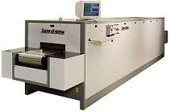
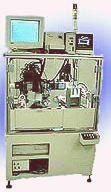

Sealing/Hermetic Encapsulation
Sealing
is the process of encapsulating a
hermetic
package, usually by capping or putting a lid over the base or body of
the package.
The method of
sealing is generally dependent on the type of package. Ceramic DIPs, or
cerdips, are sealed by topping the base of the package with a
cap
using seal glass. Other ceramic packages such as sidebrazed
packages, LCC's, and PGA's are sealed by covering the package with a
combo lid
through solder sealing. A sealing
furnace
(see Fig. 1) is used to expose the packages to the high temperatures
needed to achieve proper sealing.
Seal glass,
like any glass, is a supercooled liquid which exhibits tremendous
viscosity when cooled below its glass transition temperature. A
seal glass may be classified as vitreous or devitrifying.
Vitreous
glass are relatively transparent and can be reworked repeatedly without
degradation in its properties.
Devitrifying
glass can no longer be reworked after crystallizing upon cooling.
Fillers
are added to seal glass to control the thermal expansion of the glass.
A typical
cerdip glass sealing process consists of the following steps in its
sealing profile: 1) organic burn-off/ougassing; 2) glass
densification or softening of glass; 3) glass profile formation (around
350 deg C); 4) chemical bonding between glass and ceramic (around 420
deg C); 5) annealing; and 6) cooldown.
Cooldown
is more
critical
than heat-up because this affects the final properties of the glass more
greatly.
Welding
is used to join the metal header and metal cap of metal cans. A
specially-designed welding machine is used to deliver the high currents
needed to weld the metal header and metal cap at their interface.
Figure 2 shows an example of a lid welding machine.
Common
Sealing-related Failure Mechanisms:
Seal Cracking;
Package Cracking; Soft Errors;
Pits and Voids; Incomplete Weld
|
 |
 |
|
Fig. 1.
A Sealing Furnace |
Fig. 2.
A Lid Welding Machine |
Front-End Assembly
Links:
Wafer Backgrind;
Die Preparation;
Die Attach;
Wirebonding;
Die Overcoat
Back-End Assembly
Links:
Molding;
Sealing;
Marking;
DTFS;
Leadfinish
See Also:
IC
Manufacturing; Assembly Equipment
HOME
Copyright
©
2001-2006
www.EESemi.com.
All Rights Reserved.